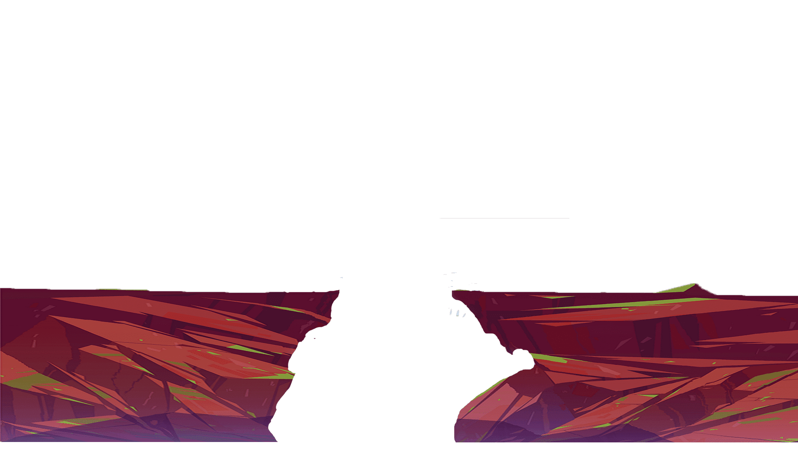
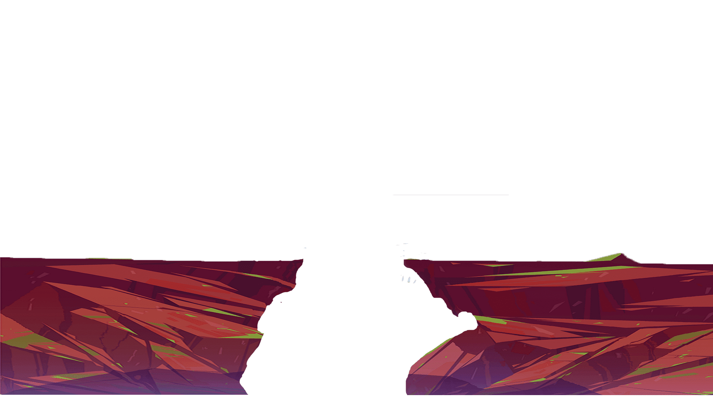

Všeobecné informácie
-
Rarotonga leží približne 3 000 km severovýchodne od Nového Zélandu
-
Ostrov má rozlohu 67,19 km², má 13 095 obyvateľov a je vulkanického pôvodu
-
Rarotonga je známa svojou bujnou vegetáciou, tropickými lesmi, čistými plážami a horami
-
Je to najväčší a ostrov spomedzi Cookových ostrovov.
-
Najvyšším vrchom je vrchol Te Manga, ktorý dosahuje nadmorskú výšku 652 m n. m.